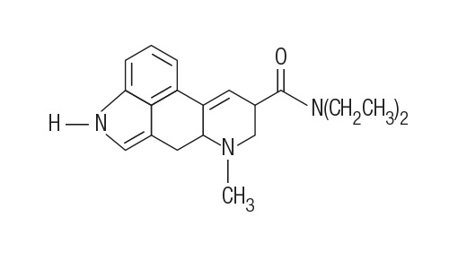
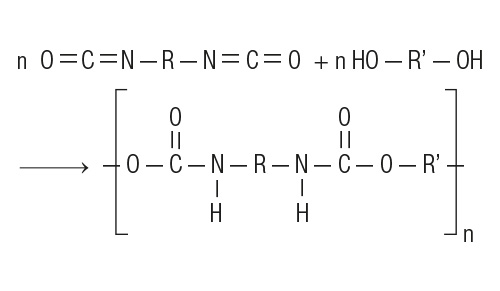
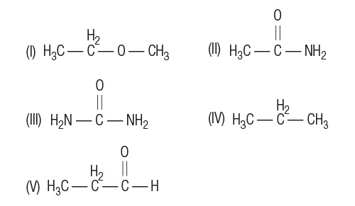
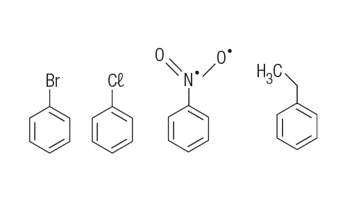
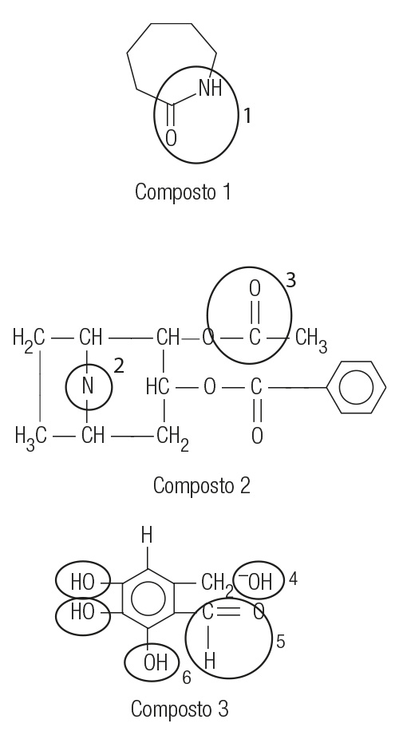
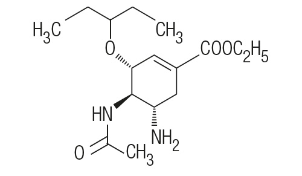
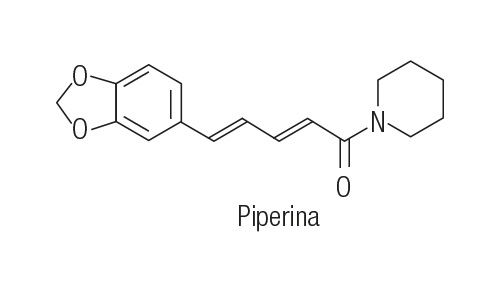
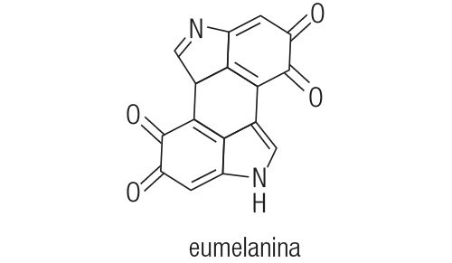

UFCG – PB) A morfina, alcaloide do ópio extraído da papoula, pode ser sintetizada em laboratório tendo como um de seus precursores o composto com a seguinte estrutura:
Identifique, na estrutura acima, três grupos funcionais.
UEMA) A Química Orgânica está presente em inúmeras atividades cotidianas, tornando-se extremamente importante para a vida dos seres humanos.
Assinale a alternativa correta que contém a função em comum nas estruturas dos seguintes compostos orgânicos.
a) Ácido carboxílico
b) Fenol
c) Aldeído
d) Álcool
e) Amina
UNEMAT – MT) Os alcanos são hidrocarbonetos também conhecidos como parafinas e muitos deles são derivados do petróleo; já as aminas são outra classe de compostos orgânicos e estão presentes de forma muito acentuada em seres vivos
animais e vegetais, tanto vivos quanto em decomposição.
Desta forma, as fórmulas moleculares do 6-etil-3-metil-5-n-propilnonano e da dimetilfenilamina são respectivamente:
a) C15H30 e C7H11N
b) C15H32 e C7H1N
c) C14H30 e C8H11N
d) C15H32 e C8H12N
e) C15H32 e C8H11N
IFTO) A serotonina é um neurotransmissor, isto é, uma molécula envolvida na comunicação entre neurônios. Ela é quimicamente representada pela 5-hidroxitriptamina (5-HT), sendo também frequentemente designada por este nome. Sua
fórmula estrutural está representada abaixo:
São feitas as seguintes afirmações sobre a serotonina:
Apresenta fórmula molecular C10H12N2O.
Apresenta o grupo hidroxila ligado ao núcleo benzênico.
Apresenta a função amina em sua estrutura.
Apresenta massa molecular igual a 176 u.
Apresenta cadeia mista, insaturada e homogênea.
São verdadeiras apenas as afirmações:
a) I, II, III e V
b) I, II e III
c) I, II, III e IV
d) I e II
e) I, III, IV
UFSC) A cocaína é um alcaloide extraído da planta Erythroxylon coca, que cresce abundantemente nos Andes. Ela age no sistema nervoso central, acelerando a atividade mental e produzindo estados de excitação, modificando as
reações
de movimento, audição e sensibilidade. Quando inalada ou injetada, provoca euforia, liberando neurotransmissores cerebrais, que são substâncias responsáveis pela comunicação entre os neurônios. Aumenta a pressão arterial, acelera o
ritmo cardíaco, provoca respiração ofegante, músculos tensos e causa tremores. A falta da substância causa grave depressão, estimula o setor do cérebro responsável pelo medo, trazendo assim a paranoia ao indivíduo, tremores
musculares, lapsos de memória, confusão mental e até alucinações. O consumo crônico pode levar à necrose (morte dos tecidos) da mucosa nasal ou das veias, quando injetada, o que aumenta ainda mais Química 57 o risco de uma overdose
provocar uma parada cardíaca letal. Seu uso prolongado leva à dependência física e a períodos de grande depressão, podendo causar a morte.
Observe a figura abaixo, que apresenta a fórmula estrutural plana de uma molécula de cocaína.
Considerada a figura, é correto afirmar:
(01) Substâncias alcaloides são formadas apenas pelos elementos químicos nitrogênio, oxigênio e carbono.
(02) Existem cinco ligações pi entre os átomos constituintes da molécula de cocaína.
(04) Amina e éster são grupos funcionais presentes na estrutura deste alcaloide.
(08) O grupo funcional amina, presente na estrutura representada acima, classifica-se como amina terciária.
(16) Existem apenas três carbonos primários e onze secundários em uma molécula de cocaína.
UFAC) A nicotina, um composto muito venenoso que está presente nos cigarros, apresenta a estrutura molecular ilustrada abaixo.
Considerando a estrutura da nicotina, pode-se afirmar que:
a) o carbono assinalado com a seta é saturado;
b) a molécula possui 16 átomos de hidrogênio;
c) há dois grupos amidas na molécula;
d) o grupo metila está ligado a um nitrogênio primário.
ITA – SP) Assinale a afirmação CORRETA a respeito do ponto de ebulição normal (PE) de algumas substâncias.
a) O 1-propanol tem menor PE do que o etanol.
b) O etanol tem menor PE do que o éter metílico.
c) O n-heptano tem menor PE do que o n-hexano.
d) A trimetilamina tem menor PE do que a propilamina.
e) A dimetilamina tem menor PE do que a trimetilamina.
UFAL) O propranolol é um medicamento indicado para o tratamento de doenças do coração. Sua fórmula estrutural está representada a seguir:
Os grupos funcionais presentes na molécula do propranolol são:
a) éter alifático, fenol e amina alifática.
b) éster, álcool e amida.
c) fenol, álcool e amina.
d) éter aromático, álcool e amida.
e) éter aromático, álcool e amina alifática.
UEMS) A estrutura da Sildenafil (mostrada a seguir), conhecida comercialmente como Viagra®, foi sintetizada por farmacêuticos pesquisadores do grupo Pfizer. Primeiramente foi estudada para o uso em hipertensão (alta pressão
sanguínea) e angina (doença cardiovascular). As primeiras impressões sugeriram que a droga tinha um pequeno efeito sobre a angina, mas que podia induzir fortemente ereções penianas. A Pfizer, consequentemente, decidiu
comercializá-la como tratamento para a disfunção erétil, ao invés de tratamento para a angina. Atualmente, o Viagra é um dos fármacos mais vendidos no mundo.
Observando a estrutura química da Sildenafil, as funções orgânicas destacadas por meio de retângulos numerados são, respectivamente:
a) amida, éster, álcool
b) amina, amida, álcool
c) amina, ácido carboxílico, éter
d) amida, ácido carboxílico, éster
e) amina, amida, éter
UERJ) Algumas doenças infecciosas, como a dengue, são causadas por um arbovírus da família Flaviridae. São conhecidos quatro tipos de vírus da dengue, denominados DEN 1, DEN 2, DEN 3 e DEN 4; os três primeiros já
produziram epidemias no Brasil.
A doença, transmitida ao homem pela picada da fêmea infectada do mosquito Aedes aegypti, não tem tratamento específico, mas os medicamentos frequentemente usados contra febre e dor devem ser prescritos com cautela. Na
tabela abaixo são apresentadas informações sobre dois medicamentos:
medicamento
fórmula estrutural
massa molar (g.mol–1)
paracetamol
151
ácido acetilsalicílico
180
Na estrutura do paracetamol está presente a seguinte função da química orgânica:
a) éter
b) amida
c) cetona
d) aldeído
UFRR) O aspartame é um adoçante artificial que contém a propriedade de ser mais de cem vezes mais doce do que a sacarose.
Analise a fórmula estrutural do aspartame e marque a alternativa que identifica as funções orgânicas existentes na sua estrutura:
a) Amina, aldeído, amida e cetona.
b) Amina, ácido carboxílico, álcool e aldeído.
c) Amida, ácido carboxílico, aldeído e amina.
d) Amida, éster, álcool e cetona.
e) Amina, amida, ácido carboxílico e éster.
FGV – SP) Nos jogos olímpicos de Pequim, os organizadores fizeram uso de exames antidoping bastante sofisticados, para detecção de uma quantidade variada de substâncias químicas de uso proibido. Dentre essas substâncias,
encontra-se a furosemida, estrutura química representada na figura. A furosemida é um diurético capaz de mascarar o consumo de outras substâncias dopantes.
Na estrutura química desse diurético, podem ser encontrados os grupos funcionais
a) ácido carboxílico, amina e éter.
b) ácido carboxílico, amina e éster.
c) ácido carboxílico, amida e éster.
d) amina, cetona e álcool.
e) amida, cetona e álcool.
IFTO) A procaína é uma droga anestésica local usada principalmente para reduzir a dor da injeção intramuscular da penicilina, e usada também na odontologia. O composto procaína foi sintetizado pela primeira vez em 1905 e possui a
fórmula estrutural abaixo:
Esse “anestésico local” trata-se, portanto, de um composto que possui em sua molécula as seguintes funções orgânicas:
a) Cetona – Amina primária – Amida secundária
b) Éter – Amida primária – Amida secundária
c) Éster – Amida primária – Amida secundária
d) Éter – Amina primária – Amida terciária
e) Éster – Amina primária – Amina terciária
UECE) A epinefrina, conhecida como adrenalina, fabricada pelo próprio corpo humano, age como hormônio, cuja ação é de euforia, principalmente nos momentos de emoções fortes, como pular de paraquedas. De acordo com sua fórmula
estrutural, possui as seguintes funções orgânicas:
a) Hidroxibenzeno, amina e alcano;
b) Álcool, amida e fenol;
c) Álcool, amina e fenol;
d) Cetona, amida e fenol.
UFPE) O orlistat é uma droga utilizada para inibir a ação da lipase, uma enzima necessária à digestão de lipídios (óleos e gorduras), fazendo com que essas substâncias sejam eliminadas pelo organismo antes de serem absorvidas.
Provoca fortes crises de diarreia em caso de ingestão de alimentos muito gordurosos. Assinale a alternativa que contém os grupos funcionais do orlistat.
a) Amina e ácido carboxílico.
b) Amida e éster.
c) Amida e éter.
d) Amina e éster.
e) Amina, cetona e éter.
UEG – GO) A vitamina B5 é obtida em alimentos. Ela é necessária ao desenvolvimento do sistema nervoso central, bem como na transformação de açúcares e gorduras em energia. Regula o funcionamento das suprarrenais. A carência dessa
vitamina causa dermatites, úlceras e distúrbios degenerativos do sistema nervoso.
Marque a alternativa que contém os grupos funcionais presentes na molécula da vitamina B5:
a) Ácido carboxílico, álcool e amida.
b) Álcool, amina e ácido carboxílico.
c) Álcool, amina e cetona.
d) Ácido carboxílico, amina e cetona.
e) Álcool, aldeído e amina.
UFRN) Em pacientes com suspeita de dengue, não é recomendada a utilização de antitérmicos e analgésicos à base de ácido acetilsalicílico (aspirina), por causar aumento do risco de hemorragia. Um medicamento substituto é o
paracetamol, um composto polifuncional, cuja fórmula é dada a seguir. Nessa estrutura, podem- -se identificar os grupos funcionais:
a) álcool e amida;
b) fenol, amina e cetona;
c) álcool, amina e cetona;
d) fenol e amida.
UFRGS – RS) Entre as muitas drogas utilizadas no tratamento da AIDS, destaca-se o flavopirodol (estrutura abaixo), que é capaz de impedir a atuação da enzima de transcrição no processo de replicação viral.
Nessa molécula estão presentes as funções orgânicas:
a) amina, éster, cetona e fenol;
b) amina, éter, haleto de arila e álcool;
c) éster, cetona, haleto de arila e álcool;
d) éster, amina, haleto de alquila e fenol;
e) éter, haleto de arila, fenol e cetona.
UFMT) O anestésico conhecido como neocaína ou cloridrato de procaína possui a seguinte fórmula estrutural:
Estão presentes na neocaína as seguintes funções orgânicas:
a) Amina e cetona.
b) Éster e cetona.
c) Amina, éter e aldeído.
d) Amina e éster.
e) Éter, cetona e amida.
(UEG – GO)
A adrenalina é uma droga interessante do ponto de vista biológico, pois, quando liberada em nossa corrente sanguínea, por causa de algum susto, acelera o nosso batimento cardíaco. Em contrapartida, o propranolol é um medicamento
destinado a pessoas com problemas cardíacos e pressão alta, pois contribui para o abaixamento da pressão e a diminuição da frequência de batimentos cardíacos. Observando a figura e comparando essas duas drogas, é correto afirmar que
os grupos funcionais presentes em ambos os compostos são:
a) álcool e fenol;
b) álcool e amina;
c) amina e éter;
d) amida e fenol.
(UESPI) Muitas funções orgânicas são responsáveis pelo sabor e aroma dos produtos que utilizamos em nosso dia a dia. No quadro abaixo, podemos observar alguns compostos orgânicos com sua fórmula estrutural 61 Química e aroma
característico. Cite o grupo funcional presente nos compostos 1, 2, 3, 4, e 5, respectivamente.
Composto
Fórmula
Aroma
1)
Maçã
2)
Amêndoa
3)
Peixe podre
4)
Menta
5)
Morango
a) éter, aldeído, amina, álcool, éster.
b) éster, aldeído, amina, álcool, éster.
c) éter, cetona, amida, fenol, ácido carboxílico.
d) éster, cetona, amina, álcool, éster.
e) éter, aldeído, amida, fenol, éter.
(UEMA)
Os estudos de laboratório feitos com a capsaicina, componente ativo das pimentas chili, sugerem que ela pode causar perda de peso e diminuir o acúmulo de gordura, desencadeando algumas mudanças de proteínas benéficas ao corpo.
O relatório, que poderia levar a novos tratamentos para a obesidade, aparece na publicação mensal do Journal of Proteome Research, da Sociedade Americana de Química.
Com base na estrutura da capsaicina, descrita abaixo, identifique todos os grupos funcionais existentes.
(UNIOESTE – PR) Na investigação de um crime um perito da criminalística concluiu que a causa do óbito foi a ingestão de uma substância tóxica que apresentava os grupos funcionais éster e amina terciária. Assinale a opção que
apresente uma estrutura que se encaixa na análise do perito.
a) Demerol
b) Metadona
c) Coniina
d) Mescalina
e) LSD

(UERJ) As bolas de futebol são feitas, atualmente, de poliuretano, um polímero sintético cuja obtenção pode ser representada pela seguinte equação química, na qual R e R’ são cadeias de hidrocarbonetos:

Pode-se observar, na molécula de poliuretano assim obtida, a formação de um grupo correspondente à seguinte função química:
a) ácido
b) amida
c) álcool
d) aldeído
(UFAC) Classifique as seguintes moléculas em ordem decrescente de solubilidade em água:

a) IV, I, V, II, III.
b) III, II, I, V, IV.
c) IV, V, I, II, III.
d) I, V, II, III, IV.
e) III, II, V, I, IV.
(UFMT) No princípio do século XVIII, os teatros e outras construções públicas em Londres eram iluminados por um gás derivado do óleo de baleia. Quando esse gás era comprimido para distribuição em tanques, um líquido volátil se
separava. O famoso cientista Michael Faraday examinou esse líquido e, por volta de 1825, constatou que continha apenas carbono e hidrogênio, em proporções iguais, e que era um componente do alcatrão destilado do carvão na produção
do coque. Assinale a alternativa que apresenta os nomes das estruturas monossubstituídas, dadas abaixo, desse composto, respectivamente:

a) Bromotilbenzeno, clorotilbenzeno, nitrotilbenzeno e metilbenzeno.
b) Bromobenzeno, clorobenzeno, nitrobenzeno e etilbenzeno.
c) Brometobenzeno, clorobenzeno, nitricobenzeno e etilbenzeno.
d) Bromobenzeno, clorobenzeno, nitrogenobenzeno e dimetilbenzeno.
e) Bromobenzeno, clorobenzeno, nitrabenzeno e metilbenzeno.
(UDESC) Considerando as funções orgânicas circuladas e numeradas presentes nas moléculas abaixo:

Assinale a alternativa correta.
a) No composto 3 a função orgânica circulada 4 representa um álcool.
b) No composto 1 a função orgânica circulada 1 representa uma amina.
c) No composto 2 a função orgânica circulada 3 representa um éter.
d) No composto 3 a função orgânica circulada 6 representa um álcool.
e) No composto 3 a função orgânica circulada 5 representa um ácido carboxílico.
(IFCE) Sobre os compostos orgânicos, considere as seguintes afirmativas.
Aldeídos e cetonas são estruturalmente semelhantes, pois ambos têm a carbonila como grupo funcional.
Éteres são compostos que contêm um grupo hidroxila ligado a carbono saturado.
Fenóis são compostos que possuem um ou mais grupos hidroxilas ligados a um anel aromático.
Alquenos apresentam fórmula geral CnH2n+2.
Ésteres e amidas são considerados derivados de ácidos carboxílicos.
São verdadeiras:
a) I, II e III.
b) I, II e IV.
c) I, II e V.
d) II, III e IV.
e) I, III e V.
(UEMG) A influenza é uma virose respiratória aguda que ocorre durante todo o ano, sendo popularmente conhecida como gripe. A estrutura química, a seguir, representa o oseltamivir, um componente dos antigripais, atualmente
utilizado.

Sobre a estrutura acima, é incorreto afirmar que
a) apresenta fórmula molecular C16H28N2O4.
b) apresenta os grupos funcionais amina e éter.
c) é um composto aromático.
d) é um composto insaturado.
(UESPI) O alcaloide extraído das sementes de Piper nigrum (pimenta-preta) é chamado de PIPERINA. Esta substância é um estimulante natural e intervém na absorção de selênio, vitamina B e b-caroteno pelo organismo. Em
relação à piperina, podemos afirmar que sua estrutura química apresenta:

a) 2 (dois) anéis aromáticos.
b) menos ligações sigma (σ) que pi (π).
c) apenas um anel aromático.
d) um nitrogênio ligado a um oxigênio.
e) um grupamento alcoólico.
(UEPB)

Muitos estudos já foram realizados sobre a influência da cor da pele na capacidade cognitiva dos indivíduos, mas não houve comprovação científica de que a cor da pele seja promotora de uma capacidade superior ou inferior de
qualquer uma raça. Na Segunda Guerra Mundial, médicos, como Joseph Mengele, com o objetivo de provar que a raça ariana era superior às demais, conduziram diversas pesquisas em que mutilavam, injetavam substâncias e cometiam outras
atrocidades contra ciganos, anões e judeus, dentre outros. A diferença na cor da pele dá-se fundamentalmente por compostos denominados de melaninas. Há vários tipos de melanina. Todas são quinonas aromáticas e o sistema de ligações
conjugadas dá origem à cor. O pigmento escuro, que é geralmente associado com a melanina é a eumelanina, termo originado do grego que significa melanina boa”, cuja estrutura está apresentada ao lado. Outras melaninas são amarelas ou
sem cor.
Com relação à melanina, julgue os itens que se seguem:
A ausência de melanina é característica do albinismo. Isso se explica pelo excessivo número de grupos aldeídos presentes na estrutura da eumelanina.
A eumelanina possui grupos amino e carbonilas (provenientes de quinona).
O aumento de melanina permite que sinapses ocorram entre os neurônios em um tempo mais curto, aumentando a capacidade cognitiva dos indivíduos, pois atua diretamente no córtex cerebral.